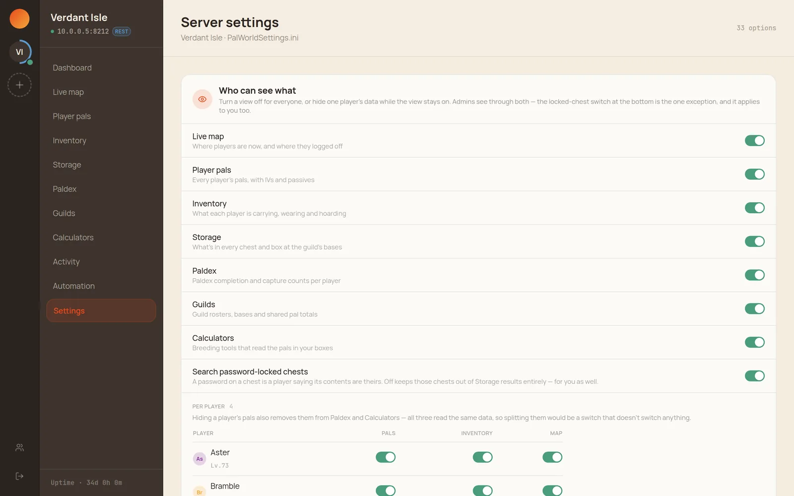

Users & permissions
ADMIN_USERNAME/ADMIN_PASSWORD bootstrap a single admin
on the first run only. After that, the Users screen (admins only) manages accounts, each
granted a subset of permissions.
| Permission | Allows |
|---|---|
| Power | Start, stop and restart the server, and repair/update its install |
| Broadcast | Send in-game messages |
| Save world | Trigger a world save |
| Moderate | Kick, ban and unban players |
| In-game shutdown | Shut the server down with a countdown |
| Settings | Read and edit PalWorldSettings.ini |
The permissions above gate only actions that change something; by default anyone signed in can view the dashboard, map, pals, inventories and guilds. What's visible is a separate setting — see Who can see what below. Admins hold every permission implicitly, plus server and user administration, and an audit trail records every management action taken through Palcon.
In-game shutdown is deliberately separate from Power, so someone trusted to restart the container isn't automatically able to boot everyone mid-session.
Grants are re-read from the database on every request rather than baked into the session token, so revoking a permission or disabling an account takes effect immediately — not whenever a week-long session expires.
Who can see what
Palcon shows a lot about the people on a server: every pal they own with its IVs, what's in their bags, where they logged off. Some communities are fine with that and some aren't, so it's switchable — per server and per player, under Settings → Who can see what (admins only).

Two switches
- A view can be turned off for the whole server — Live map, Player pals, Inventory, Storage, Paldex, Guilds or Calculators. Its nav link goes, and the endpoints behind it refuse.
- A player can be withheld from one kind of data — their pals, their inventory or their map position — while the view stays on for everyone else.
Both are enforced by the API, not just hidden in the menu, so switching a view off actually stops the data being served rather than only removing the link to it.
Password-locked chests
A player can put a password on a chest in-game. Search password-locked chests, beside the view switches, decides whether the Storage view indexes those at all — off, their contents never reach anyone's browser.
It's the one switch here that admins do not see through, and deliberately so: a switch that says "don't search these" and then shows them to the person who set it reads as broken. The escape hatch is the same as everywhere else — only an admin can turn it back on. Readers also get their own "exclude locked chests" checkbox in the view, but that only filters what the server already sent; this switch decides what gets sent.
Admins keep their own view
With the one exception above, a hidden view still appears in an admin's nav, marked with a struck-through eye, and still serves them data; a hidden player is still listed for them. That's deliberate: the point is letting an owner honour a privacy request without also blinding themselves for moderation, and an admin is the only person who can switch a view back on — one that hid itself from them would be a trap. If you want the strict version, turn the view off and leave it off; nobody else can reach it.
Why player switches are coarser than views
Player pals, Paldex and Calculators all read the same underlying payload, so there is one per-player pals switch covering all three — hiding someone from one page while another served the same bytes would be a checkbox that changes what a page draws but not what a browser can fetch. Hiding a player's pals also removes them from their guild's pal and paldex totals, which is the honest consequence of not counting them.
Adding a view to the list is a five-step change, documented in
docs/visibility.md in the repository — the fifth step is the one that actually makes
it private, so it's called out there.